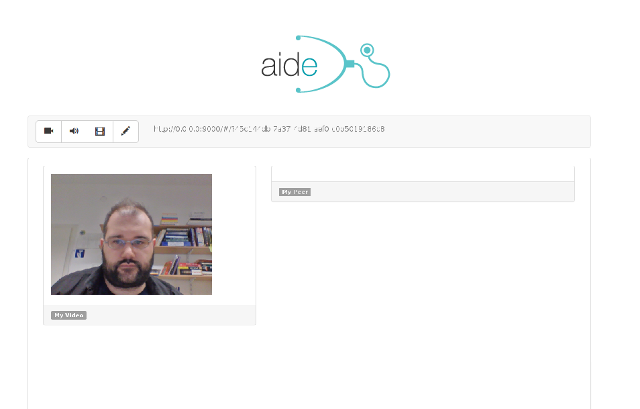

AIDE.JS - Video Consultations
iborn.net
Ohrid 2015
OUTLINE
Overview
Advantages
Application
Forecast
Demo
Team
Overview
Seamless high quality video consultations for telemedicine, using only a browser, without the need of a plugin based technology.
WebRTC - Web Real-Time Communications
Advantages
No plugins needed
Peer to peer
Efficiency
Encryption
Privacy
Ease of use
Disadvantages
Scaling group conversation
Still in development
Necessary codecs
Application
Help doctors offer their expertise
Tele-medicine
Online mentoring
Online education
Enables users to seamlessly connect with experts for high quality video advice without technical hurdles by just using their favourite device.
Doctors can reach patients where the physical distances are big and internet availability is still present.
Same concepts can be applied in online education, mentoring and continous learning programmes
Forecast
Year 1
Year 2
Year 3
Year 4
Year 5
# of Customers
2-4
6
16
30
50
# of Employees
Sales
6
10
20
25
30
Expenses
Profits
Demo
http://aide.iborn.net

Our Team
Igor Stamatovski, CEO
Zlate Dodevski, COO
Mihail Dimitrovski, CTO
Marija Alagjozovska, CQAO
Petar Efnushev, Team Lead
Dejan Mladenovski, Software Engineer
Martin Markovski, Software Engineer
Sandra Stanisavljevic, Software Engineer
Monika Jandrevska, Frontend Developer
Mitko Cakalov, Software Engineer
THANK YOU!